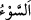
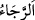
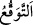

edildi. Çünkü o çirkin işi yapıyorlardı. Üzerlerine inen taşların her biri bir insan
büyüklüğündeydi.
Bilesin ki Lût kavmine âid beş belde vardı. Onlardan sadece biri kurtuldu. Çünkü bu
belde ahâlisi o pis işi yapmıyorlardı. Sodom da helâk edilenlerdendi. Burada özellikle
Sodom’un zikredilmesi Kureyş tacirlerinin uğrak yeri olmasındandır. Kureyşliler
Sodom’a uğradıklarında oranın yerle bir olduğunu gördükleri halde ibret almazlardı.
İnsanı üzen ve gamlandıran her türlü belâ ve âfete “ denir.
Bir rivâyete göre Rasûlullah (s.a.) mi‘râc gecesi üçüncü semâda bir taş gördü ve
Cibrîl’e bu taşı sordu. Cibrîl: “Bu taş Lût kavminden artıp senin ümmetinden zâlimler
için saklanan ve hazırlanan bir taştır.” dedi. Bu böyledir. Kıyâmet alâmetlerinden
birisi de gökyüzünün buğday, mısır gibi bazı hubûbatı yağdırmasıdır. Biz buna
asrımızda şahit olduk. Zâlimlere taş ve benzerlerinin yağma zamanı da gelecektir.
Bundan Allah Teâlâ’ya sığınırız!
“Peki onu görmüyorlar mıydı?” Acaba onu tepetaklak olmuş halde görmüyorlar
mıydı? Yâni defalarca uğradıklarında onu görüp de korkmuyor, ibret alıp îman
etmiyorlar mıydı? “Hayır, onlar öldükten sonra dirilmeyi ummamaktadırlar.”
“nın hakîkati iyiliği beklemek ve sevinçli bir şeyin gerçekleşeceğini
zannetmektir. Halbuki ölünün diriltilmesi kâfirler için sevince sebep olacak hayırlı bir
şey değildir. Burada bu kelime, beklenti anlamında kullanılmıştır. Beklenti () ise
hem hayır hem de şer hakkında kullanılır. Böylece kâfir ile yeniden dirilmeyi bekleme
arasında ilgi olduğunu düşünmek de mümkün olur.
Mânâ şöyledir: Onlar yeniden diriltilmeyi beklemeyen, yâni peşinden uhrevî cezâyı
getiren yeniden diriltilmeyi inkâr eden kâfirlerdi. Kesin olarak gerçekleşecek ve bütün
insanlara şâmil ve meydana geleceği sâbit olduğu halde hiç bir nefsin yeniden
dirileceğine inanmıyorlardı. O halde nasıl olur da belirli bir topluluk hakkında dünyevî
bir cezânın gerçekleşeceğini îtiraf edebilirler! Üstelik onlara göre bu cezâ ile günahlar
arasında bir bağlantı da yoktur ki helâkin izlerinden ibret ve öğüt alsınlar. Onlar bunu
ancak tesadüfle açıklıyorlardı.
Bilesin ki ölümden sonra diriltilmeyi ancak kâfirler inkâr eder. Allah dünyada
ilkbaharı, yeniden dirilişe şâhid ve meydana gelmesine işâreti kılmıştır. Bir hadiste
“İlkbaharı gördüğünüzde ölümden sonra diriltilmeyi hatırlayın.”[221] buyrulmuştur.
İlkbahar ölümden sonra diriltilme günü gibidir. Çünkü tohumun toprağa atılma vaktidir.
Çiftçilerin kalbi bu vaktin gelmesi için çarpar. Ekilen tohumun çıkıp çıkmayacağını
merak eder. Mü’min de böyledir. Allah’a itâatte gayret eder ve kalbi kıyâmete kadar
Allah amelini kabul edecek mi etmeyecek mi diye havf ve recâ arasında asılıdır. Sonra
ekin çıkıp yetişince mahsulü toplar, harman eder, saplarından ayrır, öğütür, hamur
olarak yoğurur ve ekmek yapar. Fırından yanmadan çıktığında sofraya konmaya uygun
olur. Şâyet fırında yanarsa o kişinin yaptıkları zâyî olur ve çabaları boşa gider.
Aynı şekilde bir kul namaz kılar, oruç tutar, zekât verir, hacca gider. Ölüm meleği